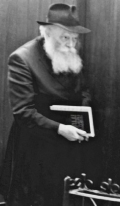

The Rebbe and the Rambam
Why did the Rebbe want the study of Rambam to be promoted behind the Iron Curtain? What connection is there between the Rambam and the Alter Rebbe? * A compilation of insights and stories connected with the daily study of Rambam from the introduction to the book “Mishna Torah L’HaRambam.” * Presented for 20 Teives, the Rambam’s yahrtzait.
INSIGHTS FROM THE VARIOUS CYCLES

The main cycle is comprised of 339 shiurim in which 1000 chapters of Mishna Torah are learned and another six units of study which include the introductions, the nusach ha’t’filla etc., which are part of the Yad and together add up to 1006 units, the gematria of Mishna Torah!
The one-chapter-a-day cycle has three times the number of shiurim as the main cycle, and altogether the cycle consists of 1,017 daily shiurim.
The shiurim of all the cycles have a set amount to be learned each day, no matter the calendar date. As a result, and since the number of shiurim is less than the days of a Jewish year, each cycle concludes at least two weeks earlier than the concluding date of the previous year (a cycle learned in a leap year ends even earlier).
BASI L’GANI
At the farbrengen which took place on Acharon shel Pesach 5744/1984, the Rebbe said the learning should begin on Sunday, 27 Nissan. This would enable them to conclude the first cycle before Erev Pesach, the Rambam’s birthday. They actually finished the cycle on 11 Nissan 5745. This was a nice present for the Rebbe in that all 83 sections were finished on the Rebbe’s 83rd birthday.
Chassidim say that the Rebbe officially accepted the Chabad leadership when he said the maamer “Basi L’Gani” at the farbrengen on Yud Shvat 5711. As the years pass, more hints and allusions are discovered in this maamer, which the Rebbe wished to convey to the “seventh generation.”
It is known that at farbrengens on special days, the Rebbe always referred to the daily shiurim as though to say: the essence of hiskashrus is expressed by fulfilling the instructions that apply daily, especially those that pertain to Torah.
It is interesting that the first letters of each segment of the shiurim that the Rebbe and the Rebbe Rayatz told us to learn daily, i.e. Chitas and Rambam, spell out “Basi.” The first letter of Chumash is a beis, T’hillim begins with an Alef, Tanya begins with a Tav, and Rambam’s Mishna Torah begins with a Yud. This would seem to indicate that by fulfilling the practical instructions of our Rebbeim, we bring to fruition the Divine Proclamation, “I have come to My garden.”
PROMOTE DAILY STUDY OF RAMBAM IN RUSSIA
The instruction and request to study Rambam daily repeated itself in dozens of sichos. R’ Shimon Aharon Rosenfeld of New York related:
“In Iyar 5744, I went to Russia with R’ Immanuel Schochet on behalf of Ezras Achim. The Rebbe initiated the daily learning of Rambam on Pesach of that year. Before we left, on Pesach Sheini, we had yechidus with the Rebbe, which was highly unusual for those going to Russia. The Rebbe blessed us with success for our trip and added with a big smile, ‘No doubt I don’t need to remind you about making a big commotion there about learning Rambam.’ The Rebbe then gave us dollar bills.
“We took along volumes of Rambam and Seifer HaMitzvos and many copies of the moreh shiur (study schedules) for the study of Rambam. Unfortunately, they took away our copies of the moreh shiur at the airport in Moscow. We were there for two weeks in Moscow, Leningrad, and Riga and told everyone we met about learning Rambam. We left with them the s’farim we had brought with us. When we returned to New York, we wrote a detailed report to the Rebbe about our trip and about promoting the learning of Rambam. The Rebbe acknowledged our report with thanks.
The Rebbe told R’ Dovid Nachshon of the Mobile Mitzva Tanks in Eretz Yisroel to have the Rambam’s Yad and Seifer HaMitzvos, as well as copies of the moreh shiur, on each tank.
HEALING THROUGH THE DAILY LEARNING
In response to news about a woman who had died in Rambam Hospital, the Rebbe asked: Do they learn Rambam in the Rambam Hospital?
When someone asked the Rebbe for a bracha and advice about his huge monetary debts, the Rebbe answered, “Did you complete all you owe in the study of Rambam?” (See the HaYom Yom for 3 Nissan for similar wording, “During the course of the year he would conclude the entire Midrash Raba, ‘borrowing’ from the long sedrot and ‘repaying’ on the shorter ones.”)
Learning Rambam is also a segula for health. The Rebbe (Motzaei Chanuka 5746, Hisvaaduyos vol. 2 p. 246) connects the segula in this to a refua shleima to the number of sections in the Rambam. The Rebbe points out that although there are various ways of counting the small halachos (individually numbered paragraphs) in the Rambam, as far as the big halachos (sections divided by types of laws) go, there are 83 as it says at the end of the enumeration of the mitzvos in the introduction. The Rebbe says this is in accordance with the Gemara (Bava Kama 92b) that makes a point regarding the gematria of “machala” (illness) which is 83. By learning the 83 halachos, there is healing, as it is known that Torah brings healing for all 83 illnesses in Hashem’s manner of healing, “I am Hashem your healer,” that one isn’t sick to begin with!
HEALING THE REBBE’S FOOT
The close connection between the Rambam and the segula of healing can be seen in the following unusual story:
In 5746 the Rebbe had a problem with his foot which prevented him from going down the stairs to daven in the shul. Erev Pesach of that year, R’ Levi Bistritzky, rav of the Chabad community in Tzfas, called Reb X after Bedikas Chametz and said he had received a message from New York that whoever went to daven for the Rebbe at the grave of the Rambam in Teveria on that day (the Rambam’s birthday) would receive $100. Although it was Erev Pesach, twenty people went to Teveria, divided the T’hillim between them, and returned to Tzfas.
R’ Bistritzky said that when he told the Rebbe that they had davened for his recovery at the Rambam’s grave, the Rebbe said that since they had been to the “great doctor,” he would be able to go down to Mincha. After that, the Rebbe went down the stairs as though he had never had a problem.
DAILY RAMBAM BEFORE THE NESIUS
The idea of a schedule to learn Rambam is not new. G’dolei Yisroel throughout the generations considered it important to systematically learn through Rambam, especially Mishna Torah. Some did it on their own, while some told others to arrange their learning in this way too.
The Rebbe apparently had a daily shiur in Rambam even before he became Rebbe. In Yemei Melech it says:
A talmid from Yeshiva Torah Vodaas in 1948-9 had a chavrusa to learn Shulchan Aruch Yoreh Deia every afternoon in 770. The two would sit next to the Aron Kodesh in the beis midrash. Nearly every evening, the Rebbe would come in for Maariv at 9:00 and then would sit and learn Rambam. This young man noticed that the Rebbe learned in order, but did not see how much the Rebbe learned each day.
The Maggid also brought, in the name of the Baal Shem Tov, the tradition to be particular about learning Rambam every day after Maariv.
THE REBBE’S CONNECTION TO THE RAMBAM
If you look at the thousands pages of sichos of the Rebbe in which the teachings of the Rambam are explicated you will discover a unique global Maimonidean Torah perspective. The Rebbe, over decades, and especially since establishing the takana, offered up hundreds of deep explanations of the words of the Rambam. A few of the Rebbe’s explanations have been collected in Likkutei Sichos and other works. If one examines these explanations, he will find that the Rebbe innovated a way of learning Rambam (whose thematic elements are based on principles the Rambam wrote in his introductions etc.)
Kudos to R’ Mordechai Menasheh Laufer who, in his work Klalei HaRambam, enumerated 267 rules established by the Rebbe as to the correct approach to learning Rambam.
Here are two examples of the soul-connection between the Rebbe and the Rambam:
1-The Rebbe urged the publication of the Seifer Haaros on the Rambam by the birthday of the Rambam on Erev Pesach. In order to hasten the work and enable the meeting of the deadline, the Rebbe offered to help out by obtaining sources of funding.
2-The Rebbe told R’ Avrohom Dov Hecht, “I koch in Rambam and there it states that Avrohom is ‘eisan.’ You should be strong and absolved of all nonsense.”
THE RAMBAM AND THE ALTER REBBE
The Rebbe’s sichos explicating the daily portion of Rambam indicate a significant basis in the teachings of the Alter Rebbe, on his Shulchan Aruch and other s’farim. It has been long accepted by those many that the principles of the teachings of Chabad are sourced in the teachings of the Rambam.
In Likkutei Sichos, Vol. 26, p. 26, the Rebbe draws parallels between the Alter Rebbe and the Rambam, with the high point being the fusion between the worlds of Nigleh and P’nimius HaTorah. This is hinted at in the Alter Rebbe’s name “Shneur” (shnei-ohr, two lights), the light of Nigleh and the light of Chassidus. This is also hinted at in the acronym “Rambam” which in Hebrew has an open Mem, representing Nigleh and a closed Mem, representing Nistar of Torah.
The Rebbe also shows textual similarities between the beginnings and endings of the Rambam’s works and the beginnings and endings of the Alter Rebbe’s s’farim.
When the Alter Rebbe was only 12 years old, he taught the complicated laws of Kiddush HaChodesh of the Rambam in public! There is also the story of the Alter Rebbe sending one of his Chassidim for a bracha for children to R’ Shlomo Karliner on the yahrtzait of the Rambam, since R’ Shlomo learned Rambam regularly and was making a siyum on Rambam.
On 20 Teives 5748, the Rebbe gave a gift to the members of the delegation that traveled to Russia in order to work on getting the Rebbeim’s s’farim released. It was a maamer that had been printed that day, and he said to them, “Today is the yahrtzait of the Rambam and this week, 24 Teives, is the yahrtzait of the Alter Rebbe. Both of them will work together with you.” R’ Cunin said, “And the Rebbe together with them,” and the Rebbe responded, “Amen.”
THE RAMBAM AND THE CHABAD MOVEMENT
Over the years, in stages, the Rebbe conveyed the idea of a connection between the Rambam’s classic work and the mystical part of Torah: 1) The Rambam knew Kabbala, 2) Analysis of the Rambam reveals chiddushim in Toras HaNistar, 3) Rambam should be learned in the manner that one studies a guide in avodas Hashem, 4) One should analyze the Rambam according to the teachings of Chassidus until the point of revealing a new way of learning Rambam according to Nigleh, 5) The Rambam is practically a part of the chain of the teachings of Chabad.
(R’ Yeshaya Marantz pointed out to me that even if that last statement seems exaggerated, we should note an amazing phenomenon. From Yud Shvat 5745, i.e. from the start of the Rambam takana, the Rebbe mentioned the Rambam in every maamer “Basi L’Gani,” just as he mentioned all the Rebbeim starting with the Baal Shem Tov.
Likewise, in a sicha of Erev Pesach 5750, the Rebbe said, “The Maaneh Lashon, which is said at the holy graves like the Rambam’s and the grave of my father-in-law, the Rebbe, Nasi Doreinu …”)
It is fascinating to note regarding the famous question about how it can be said that the Rambam did not merit the revelation of the teachings of Kabbala until the end of his life when we find many times that the Rambam (in his magnum opus that he wrote in his middle-age) is often in line with kabbalistic teachings – the B’nei Yissoschor writes that this was a glimmer from Heaven which the Rambam merited.
MISHNA TORAH OR YAD HACHAZAKA?
Mishna Torah is the name the Rambam gave his work, as he explains in the introduction. The origin of the other name, Yad HaChazaka, is not clear.
In Sichos Kodesh 5733, Vol. 1 the following sentence appears: “This work is called Yad HaChazaka, which is not a random sobriquet but a title given by the author. It is connected with ‘I will rule over you with Yad HaChazaka (the strong hand),’ (Yechezkel 20:33) to ensure that the situation in which ‘we shall be like all the nations, the House of Yisroel’ ‘will not come to pass.’” From this statement of the Rebbe it would seem that the Rambam himself assigned the alternate name to his work.
Nevertheless, in the past generation it has become accepted that the name did not originate with the Rambam. Rather, it is a name which developed in stages later on.
On other occasions (Hisvaaduyos 5748), we see that the Rebbe left it as a question. “It needs to be clarified (and as of now it is not clear) who was the first one to give this title. For despite the allusion to the number of sections, Yad=14 and the strength (chozek) of the halacha, which is why it was named Yad HaChazaka, obviously, not anybody who wants to can change or add a name to the Rambam’s work after the Rambam himself established its name! Therefore, if we see that this name has become widespread and accepted to the point that in the first editions of the Rambam there appears the verse “U’l’chol HaYad HaChazaka etc.” on the title page, or it says “Mishna Torah V’Hu HaYad HaChazaka” on the title page – we must say that this was established by a gadol b’Yisroel who had the authority, according to Torah, to add the name Yad HaChazaka.
The adding or changing of a name is so rare that it demands an explanation. The title Yad HaChazaka is so entrenched that many adopted it as the only name. Among Jews we see there are those who (like the Yemenites) zealously refuse to acknowledge the name Yad HaChazaka, and those among the Ashkenazi communities who incline towards using Yad HaChazaka.
On other occasions, the Rebbe quoted s’farim as saying that three authors did not merit that the original names of their s’farim become accepted: 1) Shnei Luchos HaBris of R’ Yeshaya Horowitz, which is referred to as the Shelah, 2) Toras Moshe of R’ Moshe Alshich, which is referred to as the Alshich, and 3) the Rambam’s Mishna Torah, which is called Yad HaChazaka.
The generally accepted explanation is they gave their s’farim names that are supposedly preserved for the Written Torah given at Sinai, and Heaven does not allow these names.
LEARNING RAMBAM IN A SIMPLE MANNER
In order to illustrate how absurd it to think that one can understand the Rambam only after convoluted reasoning and discussion which require vast knowledge, the Rebbe once told the story he heard in his early school years:
A great rosh yeshiva who said farfetched pilpulim in the Rambam passed away. When he appeared in the Heavenly Court, he proudly described how he had explained the Rambam in various intricate ways. They asked him: How do you know your explanations are correct?
He said: They have to be. Go and call the Rambam himself and let’s see.
They called for the Rambam and the rosh yeshiva presented his chiddushim. The Rambam did not look enthused by his pilpulim and said that his intention was entirely literal and this and that statement was based on such and such, and therefore there was no reason for all these questions.
The rosh yeshiva twirled his thumb, and speaking in the style and tone of the yeshiva world, he said: It is possible to resolve the matter in that fashion, but if your intention was so literal, what does that teach us? What is the chiddush is here in the Rambam?
Beis Moshiach (staff). "The Rebbe and the Rambam." Beis Moshiach, no. 862 (December 26, 2012).